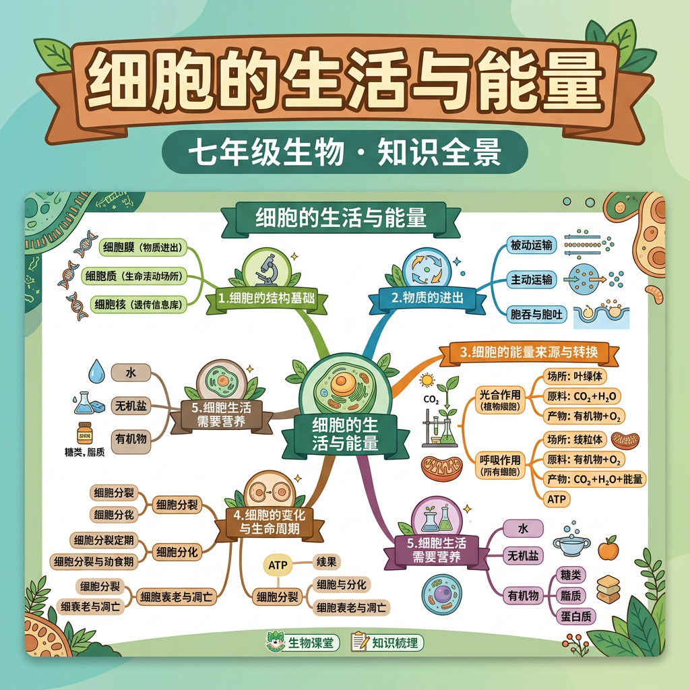

细胞如何获取物质？能量从哪里来？深入了解细胞的日常"生活"

细胞需要不断获取营养物质，排出废物，并将有机物中的化学能转化为生命活动所需的能量（ATP）。
物质不能随意穿越细胞膜——有的靠浓度差自由扩散，有的需要载体蛋白，有的还要消耗能量主动运输。
因此我们需要理解物质跨膜运输的三种方式，以及线粒体如何通过细胞呼吸为细胞提供能量。
理解自由扩散、协助扩散和主动运输的机制
掌握细胞呼吸的三个阶段及其能量转换过程
了解细胞生长和分裂的基本过程
学习蛋白质合成的过程及其在细胞中的重要性
理解细胞信号传导的机制及其在细胞生命活动中的作用
细胞膜是细胞与外界环境之间的屏障，物质通过细胞膜的运输方式主要有三种：自由扩散、协助扩散和主动运输。
物质从高浓度区域向低浓度区域移动，不需要能量。
需要载体蛋白的帮助，但仍然不需要能量。
需要能量和载体蛋白，物质从低浓度区域向高浓度区域移动。
细胞呼吸是细胞获取能量的主要方式，主要分为三个阶段：糖酵解、柠檬酸循环和氧化磷酸化。
在细胞质中进行，将葡萄糖分解为丙酮酸，并产生少量ATP。
在线粒体基质中进行，丙酮酸进一步分解，释放二氧化碳，并产生ATP。
在线粒体内膜上进行，通过电子传递链和ATP合成酶产生大量ATP。
总方程式：葡萄糖 + 6O₂ → 6CO₂ + 6H₂O + 大量ATP。
ATP是细胞能量的主要载体，细胞通过细胞呼吸将葡萄糖中的化学能转化为ATP中的化学能。
ATP的化学式： C₁₀H₁₆N₅O₁₃P₃。
ATP的水解反应： ATP + H₂O → ADP + Pi + 能量。
蛋白质合成是细胞内重要的生命活动之一，主要包括转录和翻译两个过程。
转录：DNA中的遗传信息被转录成mRNA。
翻译：mRNA上的遗传信息被翻译成蛋白质。
细胞信号传导是细胞与外界环境和其他细胞之间的信息传递过程。
细胞信号传导的主要步骤包括：信号接收、信号转导和信号响应。
本节课学习了细胞的物质运输（自由扩散、协助扩散、主动运输）、能量代谢（有氧呼吸、无氧呼吸、ATP循环）以及细胞生长、分裂、蛋白质合成和细胞信号传导等生命活动。这些是细胞生命活动的核心机制！
细胞膜是细胞与外界环境之间的屏障，物质通过细胞膜的运输方式主要有三种：自由扩散、协助扩散和主动运输。
请选择运输方式以查看详细信息。
细胞呼吸是细胞获取能量的主要方式，主要分为三个阶段：糖酵解、柠檬酸循环和氧化磷酸化。
在细胞质中进行，将葡萄糖分解为丙酮酸，并产生少量ATP。
在线粒体基质中进行，丙酮酸进一步分解，释放二氧化碳，并产生ATP。
在线粒体内膜上进行，通过电子传递链和ATP合成酶产生大量ATP。
总方程式：葡萄糖 + 6O₂ → 6CO₂ + 6H₂O + 大量ATP。
ATP是细胞能量的主要载体，细胞通过细胞呼吸将葡萄糖中的化学能转化为ATP中的化学能。
ATP的化学式： C₁₀H₁₆N₅O₁₃P₃。
ATP的水解反应： ATP + H₂O → ADP + Pi + 能量。